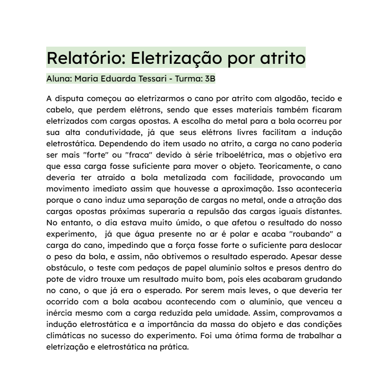

C1: Compreender as ciências naturais e as tecnologias como construções humanas associadas à cultura dos povos e suas visões de mundo; H1: Interpretar informações apresentadas em diferentes linguagens usadas nas Ciências, como texto discursivo, gráficos, tabelas, relações matemáticas, diagramas ou representação simbólica; C2: Aplicar os conceitos fundamentais e estruturas procedimentais das Ciências da Natureza na explicação de fenômenos cotidianos, bem como dominar processos e práticas da investigação científica; H9: Explicar os conceitos de energia, matéria, vida e transformação para explicar fenômenos naturais e procedimentos tecnológicos; H11: Empregar procedimentos e práticas de observação, levantamento de hipótese, experimentação, coleta de dados e conclusões para resolução de problemas relacionados às Ciências da Natureza.
Para realizar esta atividade nossa sala foi separada em vários grupo, e cada um com um tema diferente relacionado a combustão. Nosso grupo ficou com parte de economia e poder, e realizamos uma pesquisa baseada nas perguntas norteadoras dadas pelos professores, para ver como o petróleo e os combustíveis fósseis influenciam diversos fatores na economia do mundo. Foi uma pesquisa muito interessante, considerando o cenário atual (março/abril de 2026), entender como o petróleo e a posse dele pode influenciar não apenas um país, mas sim o mundo todo, de várias formas, e como essa dependência afeta diferentes setores da sociedade.
Acessar atividadeC3: Determinar os impactos das ações humanas nos ambientes, identificando suas causas e propondo soluções para a sua redução; H15: Comparar propostas de intervenção ambiental aplicando conhecimentos científicos e tecnológicos, observando os riscos e benefícios de sua implementação. H18: Identificar situações de risco ambiental na cidade onde reside.
Durante nossos estudos sobre evolucionismo, para deixar o aprendizado mais leve, fizemos essa atividade onde o objetivo era criar um meme sobre o evolucionismo, o que na minha concepção foi uma ótima forma de trabalharmos o conteúdo pois foi uma forma leve e divertida, mas que nos fazia pensar em como fazer uma relação do passado com a evolução e os dias atuais e colocar isso no meme. Para isso decidimos utilizar uma “gíria” que está sendo comumente utilizada que seria o retrô, pois muitos jovens chamam qualquer coisa que tenha mais de 5/10 anos de retro. Então no meme colocamos um homem dos dias atuais, que quer registrar tudo e qualquer coisa, tirando uma selfie com um homem no tempo dos “homens da caverna”, utilizando uma pedra, como se ele achasse aquilo uma performance engraçada. Adorei a atividade, e desafiou nossa imaginação o que é ótima para conseguirmos desenvolver mais nossa criatividade.
Acessar atividade
C1: Compreender as ciências naturais e as tecnologias como construções humanas associadas à cultura dos povos e suas visões de mundo; H1: Interpretar informações apresentadas em diferentes linguagens usadas nas Ciências, como texto discursivo, gráficos, tabelas, relações matemáticas, diagramas ou representação simbólica; C2: Aplicar os conceitos fundamentais e estruturas procedimentais das Ciências da Natureza na explicação de fenômenos cotidianos, bem como dominar processos e práticas da investigação científica; H7: Compreender os conceitos relacionados à Química nos seus diferentes ramos: Fisico-química, Química orgânica e Química Geral; H9: Explicar os conceitos de energia, matéria, vida e transformação para explicar fenômenos naturais e procedimentos tecnológicos; H11: Empregar procedimentos e práticas de observação, levantamento de hipótese, experimentação, coleta de dados e conclusões para resolução de problemas relacionados às Ciências da Natureza; H12: Relacionar informações para construir modelos em ciência e tecnologia.
Durante a aula de eletrização por atrito fizemos uma atividade prática para entendermos melhor o conteúdo e como ele poderia se aplicar além da teoria. Com isso, tivemos que analisar como foi realizado o experimento e se o resultado foi o esperado e escrever um relatório respondendo à algumas questões e perguntas norteadoras, escrevendo porque escolhemos os materiais utilizados, se o experimento deu certo ou não, e porquê os materiais se “comportaram” dessa maneira. Foi uma atividade muito interessante, a produção do relatório logo após a atividade prática serviu para reforçar os conceitos vistos e nos fazer explorar o que havíamos aprendido.
Acessar atividadeC2: Aplicar os conceitos fundamentais e estruturas procedimentais das Ciências da Natureza na explicação de fenômenos cotidianos, bem como dominar processos e práticas da investigação científica. H11: Empregar procedimentos e práticas de observação, coleta de dados e conclusões para resolução de problemas relacionados às Ciências da Natureza; C3: Determinar os impactos das ações humanas nos ambientes, identificando suas causas e propondo soluções para a sua redução. H15: Comparar propostas de intervenção ambiental aplicando conhecimentos científicos e tecnológicos, observando os riscos e benefícios de sua implementação; H18: Identificar situações de risco ambiental na cidade onde reside; C4: Compreender o funcionamento dos organismos vivos em geral e o ser humano em especial, considerando suas relações com o ambiente em que vivem, abordando aspectos físicos e socioculturais. H23: Formular propostas de alcance individual ou coletivo, utilizando como critérios a preservação e a promoção da saúde individual e coletiva.
Para realizar esta atividade a sala foi separada em vários mini grupos sobre o tema central, e cada grupo/pessoa ficou responsável por algum item ou tema importante para o trabalho. Tiveram pessoas responsáveis pelas pesquisas gerais, QR code, imagens e etc. Nosso grupo ficou responsável pela pesquisa do saneamento básico, e eu fiquei responsável pela parte da coleta seletiva. Iniciamos a pesquisa focada em tratamento de água, esgoto e coleta seletiva da cidade de Florianópolis, utilizando fontes oficiais como o próprio site da prefeitura. Após a pesquisa, começamos a procurar inspirações e a planejar como montaríamos o mural. Logo, iniciamos a parte prática. Eu iniciei fazendo as lixeiras da coleta de E.V.A, para que ficassem com um leve efeito 3D e adicionei representações do que poderia ser rejeitado em cada lixeira (nessa etapa tentei utilizar o máximo de materiais reais possível, para ficar uma interação legal). Também imprimi uma cartilha, disponibilizada pela própria prefeitura sobre como funciona a coleta e pesquisei mais a fundo sobre a Capital Lixo Zero. Achei uma atividade muito interessante, pois trabalhamos nossos conhecimentos e a nossa pesquisa de forma prática e criativa, o que facilitou a absorção do conteúdo.
C2: Aplicar os conceitos fundamentais e estruturas procedimentais das Ciências da Natureza na explicação de fenômenos cotidianos, bem como dominar processos e práticas da investigação científica; H6: Compreender os conceitos relacionados à Física em seus diferentes ramos: Astronomia, Mecânica, Acústica, Óptica, Termologia, Calorimetria, Ondulatória, Eletricidade, Magnetismo e Física Moderna e Nuclear; H7: Compreender os conceitos relacionados à Química nos seus diferentes ramos: Físico-química, Química orgânica e Química Geral; H9: Explicar os conceitos de energia, matéria, vida e transformação para explicar fenômenos naturais e procedimentos tecnológicos.
O objetivo desta atividade era retratarmos sobre a estequiometria na indústria. Então os temas foram divididos e ficamos com a produção de etanol. Fizemos uma pesquisa aprofundada e entendemos os cálculos das reações químicas para que pudéssemos apresentar de forma eficaz o que aprendemos em sala e fora dela através da pesquisa. Também abordamos as aplicações dos cálculos e questões de agroenergia, transição energética e impactos ambientais. Essa foi uma atividade muito interessante, pois no momento da apresentação pudemos perceber muitas diferenças entre o tema escolhido de cada grupo, e como cada um fez voltado para uma área, foi bem legal e produtivo entender as diferenças, comparar, analisar e ver o que seria a "melhor opção", além disso aprendemos muito durante a pesquisa.
Acessar atividadeC1: Compreender as ciências naturais e as tecnologias como construções humanas associadas à cultura dos povos e suas visões de mundo. H3: Inferir significado de termos técnico-científicos em textos de instrumentação ou de divulgação científica; H4: Identificar, em textos, diagramas, gráficos, imagens e tabelas, informações relevantes para compreender um fenômeno ou conceito relacionado às Ciências da Natureza; C2: Aplicar os conceitos fundamentais e estruturas procedimentais das Ciências da Natureza na explicação de fenômenos cotidianos, bem como dominar processos e práticas da investigação científica. H12: Relacionar informações para construir modelos em ciência e tecnologia; C4: Compreender o funcionamento dos organismos vivos em geral e o ser humano em especial, considerando suas relações com o ambiente em que vivem, abordando aspectos físicos e socioculturais; H23: Formular propostas de alcance individual ou coletivo, utilizando como critérios a preservação e a promoção da saúde individual e coletiva.
O objetivo desta atividade era retratarmos sobre a estequiometria na indústria. Então os temas foram divididos e ficamos com a produção de etanol. Fizemos uma pesquisa aprofundada e entendemos os cálculos das reações químicas para que pudéssemos apresentar de forma eficaz o que aprendemos em sala e fora dela através da pesquisa. Também abordamos as aplicações dos cálculos e questões de agroenergia, transição energética e impactos ambientais. Essa foi uma atividade muito interessante, pois no momento da apresentação pudemos perceber muitas diferenças entre o tema escolhido de cada grupo, e como cada um fez voltado para uma área, foi bem legal e produtivo entender as diferenças, comparar, analisar e ver o que seria a "melhor opção", além disso aprendemos muito durante a pesquisa.
Acessar atividadeAtividades do 3º Trimestre estarão disponíveis em breve.